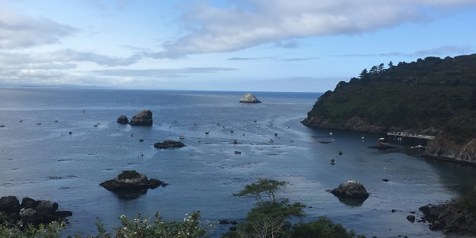
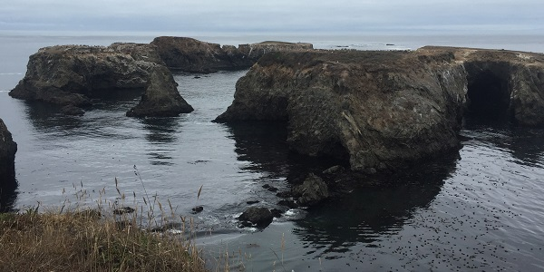
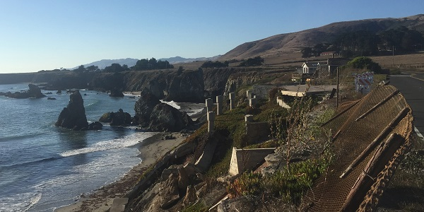
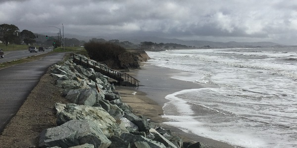
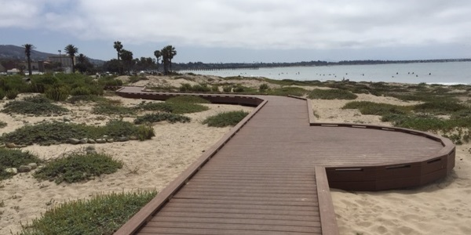
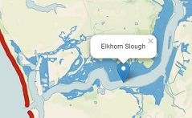

Coastal Vulnerability & Land Use Planning
Linking climate & ecosystem services science to coastal planning in a changing climate
- Small harbors provide protection for fishing fleets and increase cultural attachment to the sea (Trinidad, Humboldt County) 
-
Rocky formation along the coast provide protection from large wave events
(Cape Mendocino, Mendocino County)  -
Built structures fail, further threatening property along the coast
(Gleason Beach, Sonoma County)  - Coastal planners are actively making decisions about how we engage with the coastline. (Surfer's Beach, San Mateo County) 
-
Dune restoration protects coastal access
(Surfer's Point, Ventura County) 
Rising sea levels, population growth along coastlines, and increasing hazards associated with storms threaten California's coastal communities. Our team is engaging coastal planners, managers and the public to co-develop a multiscaled decision-support tool to highlight where natural habitats play an important role in protecting at-risk coastal populations and infrustructure.
About
Background, goals, and approach
Our Team
Meet our science-policy team
Viewer Tool
Explore the map viewer tool

Products
Outputs by California geography